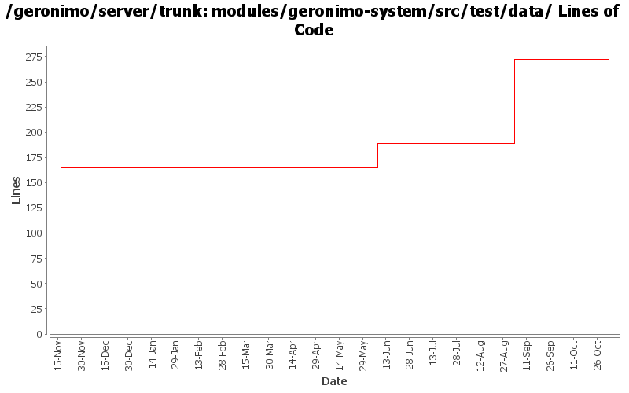

[root]/modules/geronimo-system/src/test/data
 org
(0 files, 0 lines)
org
(0 files, 0 lines)
 apache
(0 files, 0 lines)
apache
(0 files, 0 lines)
 geronimo
(0 files, 0 lines)
geronimo
(0 files, 0 lines)
 system
(0 files, 0 lines)
system
(0 files, 0 lines)
 url
(0 files, 0 lines)
url
(0 files, 0 lines)
 resource
(0 files, 0 lines)
resource
(0 files, 0 lines)

| Author | Changes | Lines of Code | Lines per Change |
|---|---|---|---|
| Totals | 11 (100.0%) | 310 (100.0%) | 28.1 |
| djencks | 3 (27.3%) | 273 (88.1%) | 91.0 |
| dwoods | 1 (9.1%) | 37 (11.9%) | 37.0 |
| prasad | 3 (27.3%) | 0 (0.0%) | 0.0 |
| kevan | 4 (36.4%) | 0 (0.0%) | 0.0 |
GERONIMO-3565. Modules distributed amongst framework/modules and plugins
0 lines of code changed in 3 files:
GERONIMO-3330 rename plugin schema so it doesn't conflict with what's in 2.0.1
1 lines of code changed in 1 file:
GERONIMO-3330 GERONIMO-3453 More changes. Plugin installer now installs stuff into config.xml, config-substitutions.properties, and external_aliases.properties. Car-maven-plugin more or less gets this stuff into the geronimo-plugin.xml.
0 lines of code changed in 1 file:
GERONIMO-3330 GERONIMO-3453 Use the new plugin schema Paul came up with. Use jaxb for geronimo-plugin xml handling. Modify the car-maven-plugin to generate geronimo-plugin.xml and explicitly specify the dependencies for the plan in pom.xml. This introduces several more jaxb libraries in lib which I hope can be removed again. Also the console plugin handling is barely working.
272 lines of code changed in 1 file:
GERONIMO-2757 Enhance plugin schema to allow for multiple versions of a plugin - Part 1. Also updated geronimo-plugin.xml files for the configs to point to the 2.0 repo.
37 lines of code changed in 1 file:
GERONIMO-2537 Update more src file headers
0 lines of code changed in 2 files:
GERONIMO-2537 Integrating patch supplied by Jay McHugh. Thanks Jaymvn -Ptools geronimo:start! Adds apache src header to files that were missing appropriate license information. This is everything except applications/console.
0 lines of code changed in 2 files: